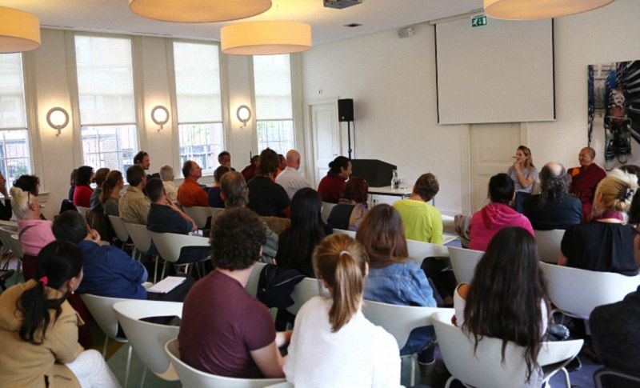
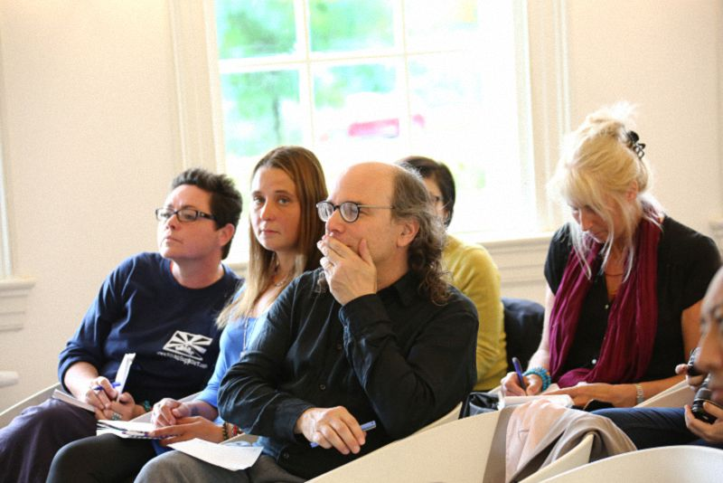
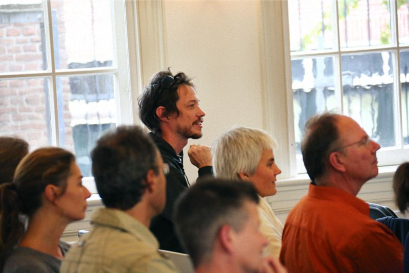

佛教与社会德行——荷兰莱顿大学座谈
『2015年9月28日』
主持人：
我是莱顿大学的佛学教授，欢迎索达吉堪布仁波切莅临座谈。首先有请扬森博士为大家介绍仁波切。

扬森博士：
非常荣幸能邀请堪布前来。
堪布是一位著名的藏传佛教大师、佛学翻译家，同时也是喇荣五明佛学院最主要的传法上师之一。佛学院是当今世界规模最大、最具影响力的佛教中心，引领人们学修藏传佛法。堪布亦成为现今藏传佛教的领军人物，致力于将藏传佛法弘扬至汉地。
在过去近三十年，堪布一边孜孜不倦地宣讲佛法，一边大量地翻译、著述，他用中文讲述藏传佛教的书籍，一直非常畅销。堪布拥有大量汉族弟子和信众，并积极投身于各种慈善事业，在弘扬佛法尤其是如何吸引年轻人方面倾注了很大心力。而这也是今晚堪布将和大家交流的主题——“藏传佛教对都市青年的吸引力”。
下午的活动主要以问答形式进行，如果你有一直想问但没机会提出的问题，欢迎畅所欲言，我会尽力做好翻译。
（一）问：我想知道您进行全球巡讲，是出于什么考虑？从网站上看到，您去过全球很多知名大学演讲，在您看来，为什么和大学师生交流如此重要？
答：大概从2009年开始，中国汉地的部分大学邀请我去演讲、交流，我想这可能对一些年轻人的思想、文化、佛学修为等方面有所帮助，因此只要有合适的机缘，不管是什么学校，多么辛苦我都会去。在有些地方讲课的时候，我也这样说过。
中国有34个省级行政区域，到目前为止，除了5个省以外，其他地方都有大学邀请过我。我并不是只讲佛法，也会聊一些世间话题、个人想法，纯粹只是交流，没什么其他目的。
去的地方不仅有大学，还有一些中小学、监狱等，但大学占多数。总的来说，只要有人邀请，我都尽量会去。
（二）问：在中国的政治环境下，听您讲课的人会有什么反应？
答：以前法王如意宝晋美彭措在传讲佛法时，从来不涉及跟政治相关的内容。喇荣五明佛学院有一些汉族弟子，我在为他们传讲佛法的时候，也从来不涉及政治方面，因为这不是佛学院的方向和目的。
就我个人而言，不管是传法还是去学校演讲，基本不谈论政治、民族、国家之类的话题，不管在哪个场合，我还是以交流佛法为主，这样跟谁都可以坦诚交流。
其实演讲者如果带有其他意图，并不好。而单纯的传法和交流，不会有这些方面的问题。
（三）问：我听说，印度教对藏传佛教有一些影响，譬如有的印度教天神已经融入了藏传佛教。您如何看待这种影响？
答：印度教有很多种，比如婆罗门教、吠陀教等，吠陀教里又有裸体派等。从历史上看，吠陀教比佛教还古老，距今已有三千多年。
藏传佛教的密法中，分方便道和解脱道，方便道中有些佛父佛母的形象，和世间天神的确有相似之处。汉地的一些佛教人士、研究者就此认为，藏传佛教是从吠陀教传过来的，甚至连教义都相同。但实际上，二者不仅形式不同，意义更有天壤之别。
比如印度教的大自在天派，崇尚具有贪欲的大自在天，密法中的佛父佛母双运相，也显现为具有贪欲的男女之相——虽然二者都是贪欲，但前者是一种自相烦恼，后者则是妙观察智，在极密见解中，更表示心的本体无生与自性光明无二无别，即“明空双运”。显现上是佛父佛母双运，究竟意义中，是心的无生空性与不灭光明双运。
所以，如果对密宗续部详加研究，就会发现藏传佛教与印度教有着本质差别。
（四）问：我在莱顿大学教书，堪布也在佛学院教书，我们知道任何课程对听课者都有一定要求，那么喇荣五明佛学院的听课要求是什么？比如参加禅修入门课有什么条件，课程安排和教学方式是怎样，学生要为禅修做什么准备，还是直接就可以去体验？然后我还想问，在一对一的禅修课上，堪布最先会指点些什么？
答：任何大学的确都有一些听课要求，这在东西方是一致的。因此佛学院的禅修课有很多次第：针对初学者或零基础人士的初级课程，要求比较低；而属于大圆满禅修的直断和顿超等修法，要求就很高，比如首先圆满五加行，包括顶礼、皈依、发心、供曼茶、百字明各十万，一共要修完五十万。
另外，在佛学院的学生，除少数守持四根本戒和酒戒的居士之外，其余都是出家的觉姆和喇嘛，要守持沙弥戒、沙弥尼戒或比丘戒。不仅在戒律上要求比较高，修行方面也需要经过长时间练习，才能获得修持大圆满等更高法要的资格。对于刚入门的弟子，一般不会传授大圆满光明和直断的修法传承。
就像我刚到喇荣的时候，法王如意宝第一次传大圆满，我当时没修完五加行，虽然非常渴望，但还是没资格听；后来法王第二次传大圆满，讲《上师心滴》，我又没获得灌顶，因为夏天正好去外面结夏安居，赶回来的时候灌顶已经结束了；直到法王第三次传密法，我的加行修完了，灌顶也有了，才终于得到大圆满的教授。所以想获得最高修法，并不是那么容易。
至于初学者的禅修，大多数是按照毗卢七法的方式：双足跏趺坐，双手结定印，脊背端直，颈部稍微前倾，双目垂视鼻尖，舌尖抵住上颚，两肩放松后展。这是禅修的普遍方法，在很多大学也有应用。通常认为，身端直则脉直，脉直则心直，心直就容易获得安乐。
所以对初次禅修的人，我会建议毗卢七法。以此为基础，练习心的专注、寂静，是最首要的指导方法。
（五）问：世界上有很多种社会经济体系，您是否认为人们的痛苦是这些体系造成的，它能为我们的痛苦买单吗？
答：每个人都要面对疾病、烦恼。在佛教看来，导致痛苦的原因，和自己前世的因缘有关，也和今生的生存环境、物质条件、经济状况等有关，但后者不是决定因素，物质或金钱并不必然导致快乐或痛苦。
这是一个物质高速发展的时代，也是自然环境被大肆破坏的时代。为了挖掘矿产、建设工业、大兴土木……人们做了很多违反自然规律的事。
荷兰的环境仍然非常优美，我看到这里建筑不多，即便在大城市，也只有少数高楼。但在亚洲一些国家，有很多高层建筑、现代工厂，导致空气、水源都被严重污染；食品也不安全，里面会添加各种化学物质，造成健康隐患，给人们带来痛苦。
相对来说，欧美国家的环境、食品会更加优质，一些中国留学生来到这里，也希望能找到工作留下来，不想再回去，因为担心呼吸不到清新的空气，吃不到健康的食物。他们是这样跟我讲的。
总之，今天的人类正在破坏自己的生存环境，损害自己的健康。世界的发展趋势就是这样，似乎很难改变。当然也不是说所有人都这样，像澳洲、欧洲就做得比较好。不同国家的人们也在互相学习，但更多是在经济方面，其实，大家应该为了共同的幸福而努力，这非常重要。

（六）问：人们渴望得到关爱、陪伴、爱情乃至婚姻，这些是否会成为修道的障碍？
答：都可能会。但对修行人来说，最大的障碍是对法产生邪见，认为修行没有意义，从而舍弃。
《中观四百论》中讲，如果毁坏了戒律，还有恢复、清净的机会；但如果毁坏了正见，就不可能再如理修行了。所以，守护居士戒等学处，可以成为修行的助缘，帮助我们护持自心；但更应该遣除邪见，这是最根本的违缘。
因此平时的行为能相合戒律是最好的，如果做不到，也可以通过忏悔，比如念诵金刚萨埵心咒来清净罪业。最关键的是，内心不舍弃正法。对修行人来说，没什么比坚持修行更重要。
我不太清楚你的问题是否只针对修行人，如果是世间人，应该有另外的解释方式。
（七）问：佛教徒如何看待在战争中，士兵为了保护自己而杀害他人？比如二战期间，前线士兵彼此近得能看见对方的眼白，这时要么他杀你，要么你杀他，似乎别无选择。他们会犯下杀业吗？佛教里是否有方便法门，来救度那些犯下杀业的士兵？
答：杀生的罪过是很大的，如果从世间角度，人们会有各自的说法，但从佛教角度，只要有杀心、加行、最后断了众生命根，具足这些条件，就有杀生的罪业和果报。
其实为了保护自己，反抗、制止对方的行为都可以，不一定非要杀害他人。
哪怕在第二次世界大战时期，既有各种武器装备，也有各种防卫方法，看你怎么做。但如果造了杀业，罪报肯定是有的。
（八）问：人一旦造下罪业，除了感受果报，还有没有清净的方法？
答：今天的大多数人，对于“造善业会得到快乐，造恶业会得到痛苦”的道理都不太懂，尤其是年轻人，因为从小受到的教育、接触的文化、所处的环境等，都不涉及前后世、业因果，对这些方面当然会有疑惑。但这样也很好，在佛教看来，有所怀疑才会提出问题，通过观察、探讨、辩论，当疑惑逐渐解除，自然会对善恶因果生起稳固的定解。
我个人是相信业因果真实存在的。这不仅是对佛法的单纯信心，也是依靠学习理论所得到的一种确信。打个比方，就像同一个家庭的两个孩子，按说父母方面的因缘相同，孩子的性格、命运也应该相同，但事实并非如此，他们往往有不同的快乐和痛苦。为什么会这样？就是因为各自的阿赖耶上有不同的业。对此佛教解释得非常清楚，而其他学说，包括现在的科学在内，都给不出合理的答案。这一点每个人在生活中都有体会，稍微思考就能明白。
佛教很看重智慧，这样了解、观察、研究是很好的。你能站起来提问也是很好的。
清净罪业需要忏悔。在藏传佛教中，忏悔主要依靠四种对治力：所依对治力，是在前方虚空观想上师金刚萨埵佛，在他面前忏悔；厌患对治力，是对以往的罪业生起追悔之心；返回对治力，是发誓从今往后再也不造；现行对治力，是观想金刚萨埵佛降下甘露，加持自己的所有业障习气得以清净。
还有更高的一种忏悔方法，是观察心的本体，在空性中一缘安住，从而认识心的本来面目。正如论典中说：“真实正观真实性，真实见已即解脱。”一旦照见心的本性，就会当下解脱，一切罪业也消泯无余。
如果你的境界比较高，可以这样忏悔；如果暂时达不到，依靠四对治力忏悔也非常好。
（九）问：我想了解“意伏藏”，它藏在哪里，如何从过去保存到现在，又如何发挥作用？
答：关于意伏藏的问题，不知道你们能不能听懂，或许我讲得再多，大多数人还是没概念。但不管怎样，可以简单介绍一下。
意伏藏有很多来自莲花生大士，比如《大宝伏藏》等；藏地历史上也有108位伏藏大师，数目相当多。对于伏藏法，如果做过一些研究，就比较容易懂得其中意义；否则，对很多历史可能会觉得难以理解。
比如莲师当年，因为担心某个修法随着时间流逝而在世间隐没，就以愿力把它伏藏在甚深心性中，依靠空行母的谛实语封印，成为意伏藏。还有一些伏藏法，会被隐藏在虚空、大海、岩洞等地方，成为“地伏藏”。伏藏师到了指定时间，就会依照空行、护法、法主等的提示，一一进行开取。
像顶果钦哲仁波切、法王如意宝等，都开取过很多意伏藏。比如法王如意宝就曾经在莲师圣地，依靠回忆前世而自然获得意伏藏。以前我做侍者的时候，多次看到法王将意伏藏开取、记录下来的过程。
（十）问：如果因果律存在，是否意味着我们可以通过种下善因，得到想要的善果？比如想致富，就先帮助别人致富；想有人陪伴，就先陪伴那些孤独的人。我还听说，为了某个愿望去做相应的善法，念念不忘，愿望就会很快实现，无需等到来世，这是真的吗？
另外，据我了解，佛学院的传统比较超脱于世间，而堪布显得更加关心世间，眷顾像我们这样的人。非常感谢您。
答：业的种类很多，有顺现世受业：一些大的布施、安忍等，即生就能感果；顺次生受业：今生造业，下一世感果，比如杀父杀母等五无间罪；顺后世受业：经过很多世才会感果；还有不定业：具有对治法后，原来的业已经清净，不用再感果。
这其中，顺现世受业往往最受关注。很多人对业因果的认识，就是停留在今生的层面，比如布施是为了今生致富，安忍是为了今生相貌端严……各种行善积德是为了今生就能吉祥圆满。但实际上，还有其他几种业的存在，就像农民种庄稼，春天播种，秋天收获，不同的业有不同的成熟周期，想在短时间内得到所有果实，这很难。
佛经中说：“欲知前世因，今生受者是；欲知后世果，今生作者是。”你的前世是什么样，看看今生感受的果就知道；后世会怎么样，看看今生造下的因就知道。因果之间，隔着时间，不可能做一点善法就能马上满愿，没有那么简单。
不知道荷兰有没有农民，我问过一些人，有的说有，有的说没有。但不管怎样，用农民种庄稼的比喻来解释业因果，大家应该更容易理解。

（十一）问：喇荣五明佛学院的创始人晋美彭措法王，生前留下很多教言，后来汇编成《不离》这本书，堪布仁波切已经把它翻译成汉文出版，英译本也在海外出版。其中有一句箴言“莫舍己道，勿扰他心”，被当作法王教言的精华。我想知道它产生的因缘，有什么特殊意义，为什么如此重要？
答：法王如意宝的传承弟子都非常重视这句话，因为它是上师的最后遗教。法王是在成都的医院圆寂的，圆寂前五六天，他老人家通过电话对喇荣的弟子们做了最后开示，留下这句“莫舍己道，勿扰他心”的教言。
第一点“莫舍己道”，可以结合很多意义来理解。如果是修行人，应该不舍弃修行人的道；如果是世间人，不管从事任何行业，也要秉持各自的道。比如我是藏族人，就不要舍弃藏族的道；你是老师，就不要舍弃为师之道。无论做什么，不舍弃自己的道都非常重要。
第二点“勿扰他心”，是指为人处世，对上级、长辈要恭敬，对同事、同辈要随顺，对下级、晚辈要慈爱，如果懂得这些，就不会扰乱别人的心。今天这个世界有很多冲突，大到国家之间的战争，小到家人之间的矛盾，相互伤害乃至杀害，这些都是扰乱人心。所以“勿扰他心”往小了说，是爱自己的家人、老师等，往大了说是爱世界上的所有人，再大的话，是连动物也要去爱，去保护。
如同莱顿大学把宽容作为学校的理念，“莫舍己道，勿扰他心”也成为喇荣的核心精神。在法王如意宝圆寂之后，每一个藏族人或修行人，都不要舍弃自己的道，也不要扰乱他人的心，应该把利益众生作为根本——这就是法王遗教的意义所在。
对此还有很多种解释方法。但不管从佛教还是世间角度，不管是哪种身份，如果能做到不舍自己的道，同时还能随顺众生，我觉得就是一个很好的人。
（十二）问：您在《不离》的前言中提到，这本书只是法王部分教言的合集。我想知道您编辑这本书的思路，是如何汇集、筛选，最终形成我们所看到的篇章？
答：法王的教言确实很多，仅仅传讲《麦彭仁波切教言集》的时候，就刻满了很多张光盘。其中少部分是对弟子相续直接起作用的，大部分是一些批评和教诲。
我想这些批评应该对大家有利，因为无论是谁，都很难看到自己的过失。在藏地，见到弟子不如法的言行，上师有直接批评、教诫的传统，不仅法王是这样，包括阿底峡尊者在内的很多传承祖师也是如此。大家认为，批评就是上师最殊胜的教言。正如论典中所说：“击中要害的批评，是最殊胜的教言。”
这是第一本书的编辑思路。还有一些其他教言，由于时间关系没有编完，可以留待下一本。
主持人：
我想代表所有人感谢堪布仁波切的此次前来，与我们面对面交流。也非常感谢扬森博士承担了临时翻译的工作。再次感谢所有人！